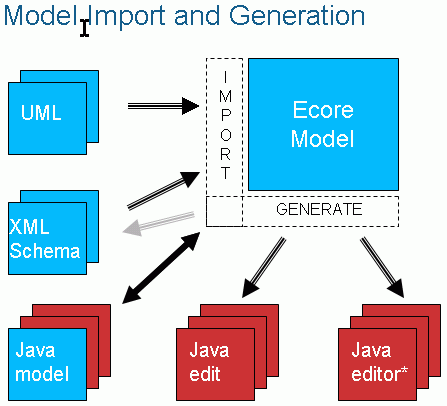

|
EMF
Project architecture
|
|

Figure 1. <EMF Architecture Diagram> |
|
|
EMF: |
||
| • org.eclipse.emf.codegen | - | Java Emitter Templates (JET) and JMerge code generation components |
| • org.eclipse.emf.codegen.ui | - | workbench support for JET |
| • org.eclipse.emf.codegen.ecore | - | Generator model and headless generator and model conversion tools |
| • org.eclipse.emf.codegen.ecore.ui | - | workbench-based code generator and model conversion tools |
| • org.eclipse.emf.common | - | command and notification frameworks and utilities used throughout EMF |
| • org.eclipse.emf.common.ui | - | extensions to SWT and JFace used in other EMF UI plug-ins |
| • org.eclipse.emf.ecore | - | Ecore model and implementation, persistence framework, and utilities |
| • org.eclipse.emf.ecore.edit | - | sample edit support for Ecore |
| • org.eclipse.emf.ecore.editor | - | sample Ecore editor |
| • org.eclipse.emf.ecore.change | - | Change model and change recorder utility |
| • org.eclipse.emf.ecore.change.edit | - | sample edit support for Change model |
| • org.eclipse.emf.ecore.xmi | - | default XML/XMI resource implementations |
| • org.eclipse.emf.edit | - | UI-independent portion of the EMF.Edit framework |
| • org.eclipse.emf.edit.ui | - | Eclipse UI portion of EMF.Edit |
| • org.eclipse.emf.mapping | - | UI-independent portion of the EMF Mapping framework |
| • org.eclipse.emf.mapping.ui | - | Eclipse UI portion of the EMF Mapping framework |
| • org.eclipse.emf.mapping.ecore2.ecore | - | support for mapping between Ecore models |
| • org.eclipse.emf.mapping.ecore2.ecore.editor | - | sample Ecore mapping editor |
|
SDO: |
||
| • org.eclipse.emf.commonj.sdo | - | Service Data Objects (SDO) specification interfaces |
| • org.eclipse.emf.ecore.sdo | - | EMF model and implementation of SDO |
| • org.eclipse.emf.ecore.sdo.edit | - | sample edit support for SDO |
| • org.eclipse.emf.ecore.sdo.editor | - | sample SDO datagraph editor |
|
XSD: |
||
| • org.eclipse.emf.mapping.xsd2ecore | - | support for mapping between XML Schema and Ecore |
| • org.eclipse.emf.mapping.xsd2ecore.editor | - | sample XML Schema-Ecore mapping editor |
| • org.eclipse.xsd | - | XML Schema Inforset model and implementation |
| • org.eclipse.xsd.edit | - | sample edit support for XML Schema |
| • org.eclipse.xsd.editor | - | sample XML Schema editor |
| • org.eclipse.xsd.test | - | tests and example code for XML Schema model |
|
EMF: |
SDO: |
XSD: |
||
| • Website | • Website | • Website | ||
| • FAQ | • FAQ | • FAQ | ||
| • Documents | • Documents | • Documents | ||
| • Newsgroup | • Newsgroup | • Newsgroup |
Last updated: $Date: 2008/05/21 20:09:05 $